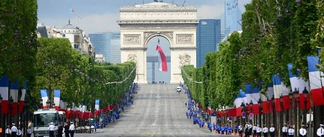
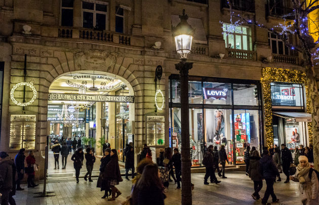
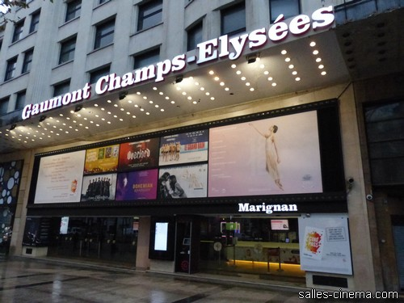
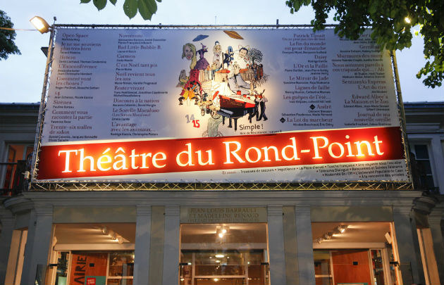

Champs Elysees!
Presentation
Célèbre dans le monde entier, l’avenue des Champs Élysées est un incontournable lors d’une visite à Paris. On ne présente plus l’avenue des Champs-Élysées. Figurant dans le hit-parade des sites les plus visités de Paris, elle accueille chaque jour près de 300 000 visiteurs ! On y vient pour admirer les grands monuments, faire du shopping, vibrer lors des grands événements… De jour comme de nuit, il se passe toujours quelque chose sur la plus belle avenue du monde.
Au paradis du shopping
Côté shopping, les Champs-Élysées comptent de très nombreuses enseignes. Mode, beauté, sports… Il y en a pour tous les goûts ! À vos marques, prêt… Shoppez ! Une promenade sur les "Champs", c’est l’occasion de (re)découvrir les produits iconiques des marques françaises : les mocassins de J.M. Weston, le polo au crocodile de Lacoste, le cultissime sac pliage de Longchamp, l’indémodable culotte en coton de Petit Bateau ou encore les pulls en cachemire d’Éric Bompard se sont donnez-rendez-vous sur la célèbre avenue pour le plaisir des fashionistas.
Les cultures
Les Champs-Élysées sont un véritable bouillon de cultures. Cinémas, théâtres, salles d’expos… il y a l’embarras du choix ! Pour les amateurs de théâtre, rendez-vous au fameux Théâtre du Rond-Point qui fait la part belle à la création contemporaine, ou encore au Théâtre Marigny, l’Espace Pierre Cardin ou au Théâtre des Champs-Élysées, non loin de là. Envie d’une expo ? À deux pas du rond-point des Champs-Élysées, ne manquez pas le monumental Grand Palais. Construit pour l’exposition universelle de 1900, il accueille sous sa gigantesque nef tous les événements XXL… Et juste en face se trouve le Petit Palais avec son incroyable collection. Pour un ciné, de nombreuses salles obscures vous attendent sur l’avenue, et c’est même l’artère parisienne qui en compte le plus ! Parmi elles, les cinémas "historiques" des années 30 comme l’UGC Normandie, l’ UGC George V et le Gaumont Champs-Élysées. À proximité, on trouve aussi des salles art et essai, telles que L’Elysée-Lincoln ou Le Balzac. Et pour une expérience inédite, découvrez le très insolite MK2 niché dans le Grand Palais.
 